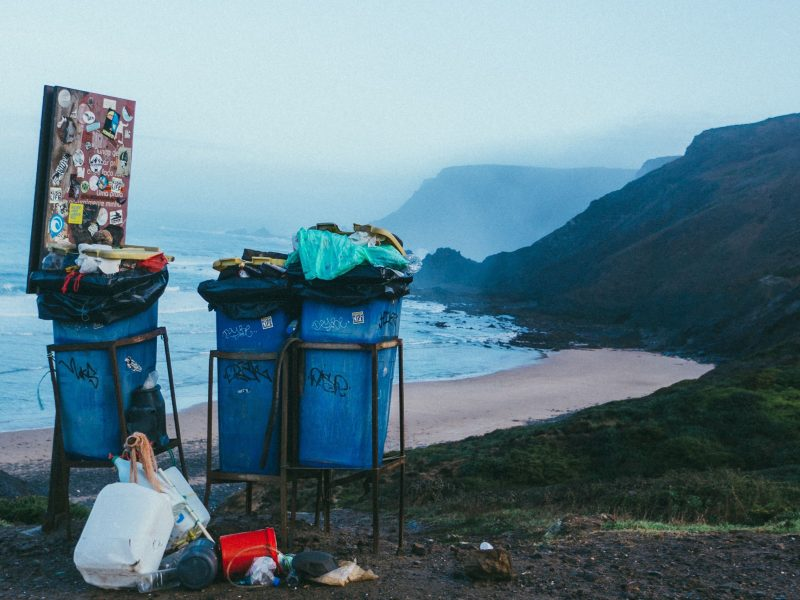

March 24, 2019
Sorting Made Easy

We have all done it – hovered over a waste bin at an airport or the park trying to determine where to responsibly deposit our trash. Should it go in recycle or garbage? compost or landfill? If we are in a hurry, chances are it ends up in the trash. Worse still is when it should have been in the trash but ends up in the recycling container contaminating the whole bin.
What is the solution? One easy step is to have standard labels on all community waste bins.
Imagine if at every cross roads in America we had different looking Stop signs. Confusing! Because safety is so important, our government has standardized the red octagon and our response is now automatic. It could also be that easy when we are faced with choosing which waste bin – garbage or recycling.
Recycle Across America offers two easy ways you can help. First order the standard labels for your office, school or church. Then you can reach out to your local government body to implement the same labels across your community.
Needing inspiration? Meet Ryan. This 9 yr old boy says, “Everyone has their passion. Mine is recycling!” And he walks the walk. He founded Ryan’s Recycling to keep trash out of the ocean and has now helped recycled more than 500,000 cans and bottles. If he can do all this on his own, what can we achieve together?